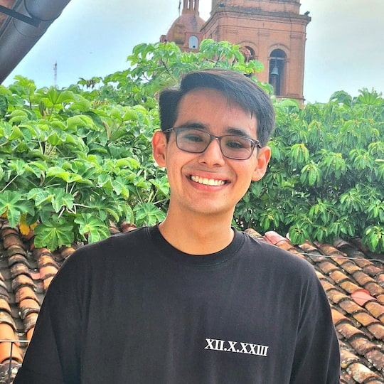

Gabriel Alba | WDD 130

Hi everyone! My name is Gabriel, and I’m currently pursuing a Bachelor of Science in Software Development through BYU–Idaho. Alongside my studies, I work part-time as a teacher, which is something I truly enjoy — I love helping others learn and grow. I’m also passionate about technology, which perfectly matches my field of study. Outside of work and school, I spend most of my time with my lovely and beautiful wife, who makes me feel complete and brings so much happiness to my life. I also enjoy playing soccer, listening to music, and of course, eating pizza, my favorite food! Right now, my family is just my wife and me, and together we make a great team. Teaching and technology are my biggest passions, and I’m always excited to keep learning and sharing